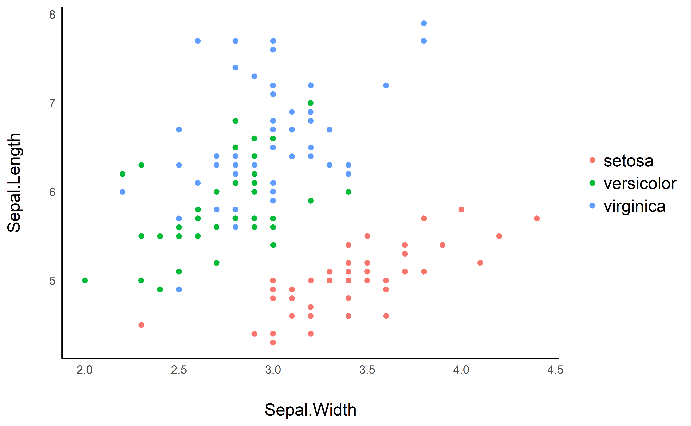
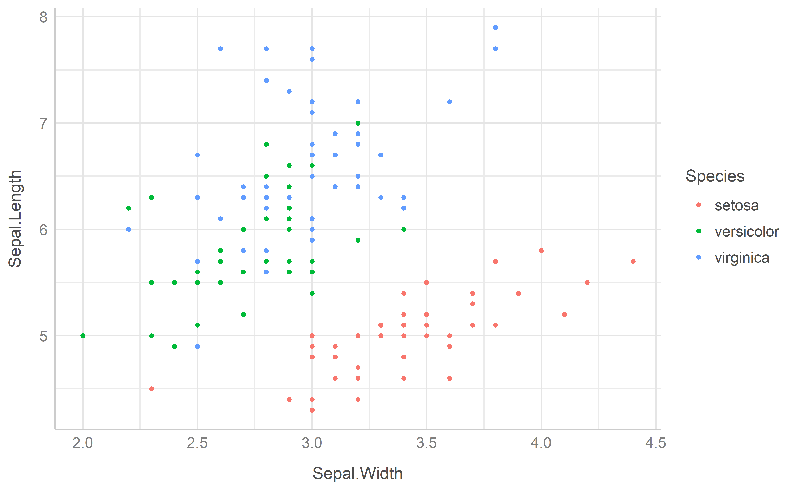
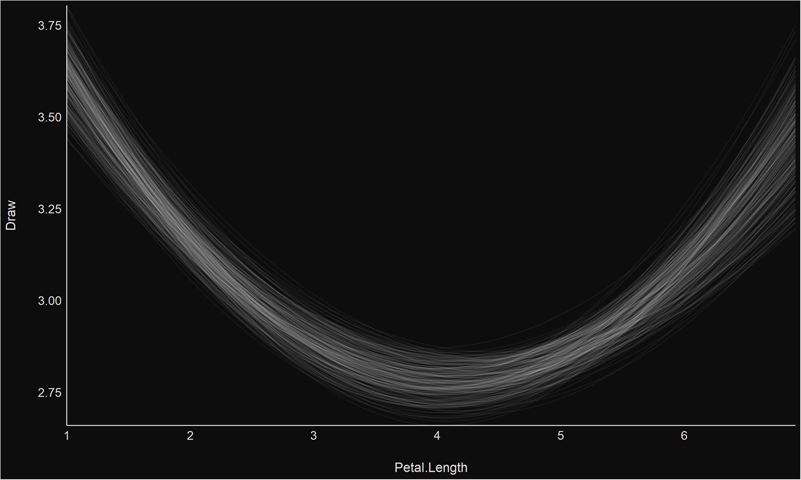
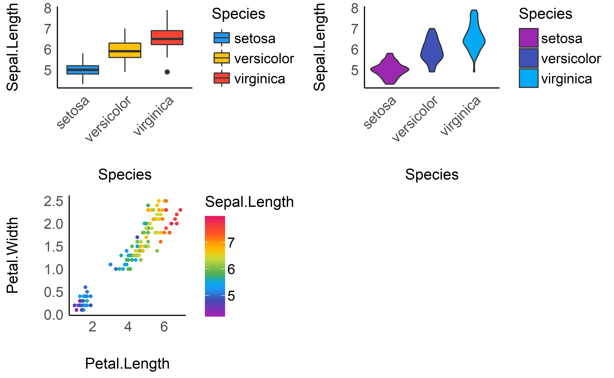
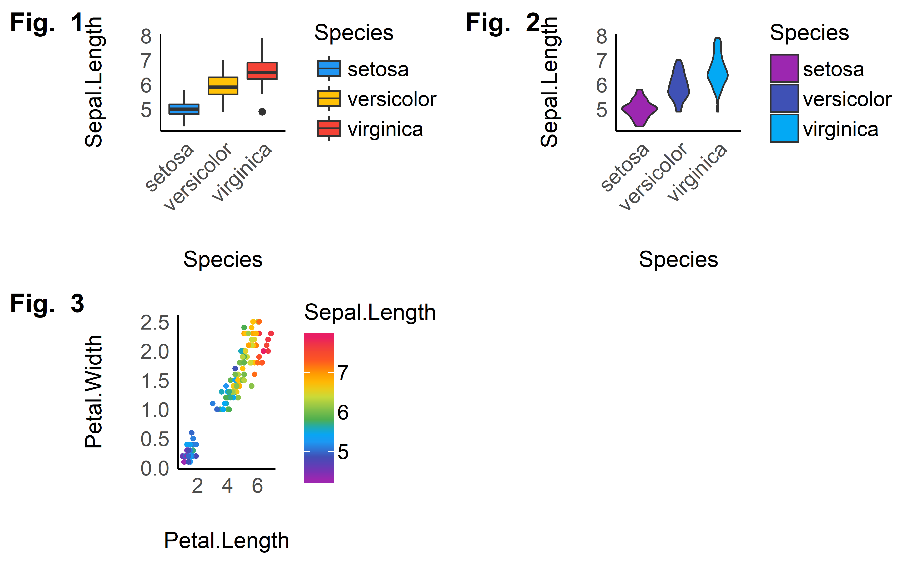
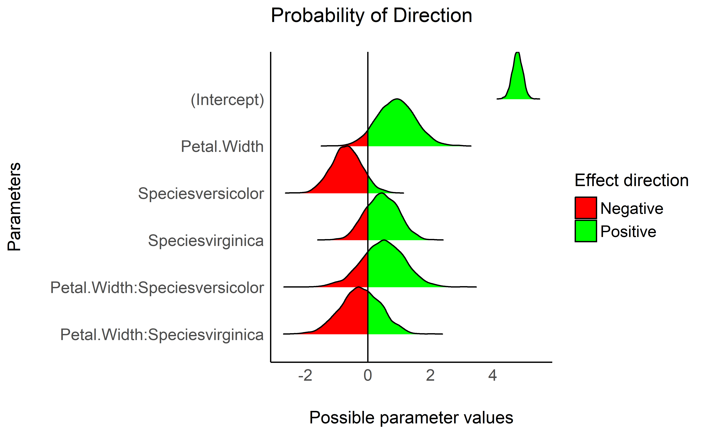
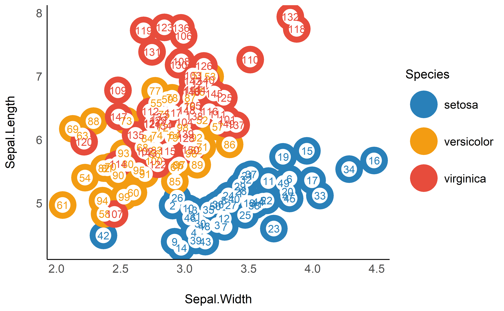

“Damned are those who believe without seeing”
Features
Themes
Modern
library(ggplot2)
ggplot(iris, aes(x = Sepal.Width, y = Sepal.Length, color = Species)) +
geom_point2() + theme_modern()
Lucid
library(ggplot2)
ggplot(iris, aes(x = Sepal.Width, y = Sepal.Length, color = Species)) +
geom_point2() + theme_lucid()
Blackboard
library(rstanarm)
library(estimate)
dat <- rstanarm::stan_glm(Sepal.Width ~ poly(Petal.Length, 2),
data = iris) %>% estimate::estimate_link(keep_draws = TRUE,
length = 100, draws = 250) %>% estimate::reshape_draws()
p <- ggplot(dat, aes(x = Petal.Length, y = Draw, group = Draw_Group)) +
geom_line(color = "white", alpha = 0.05) + scale_x_continuous(expand = c(0,
0)) + scale_y_continuous(expand = c(0, 0))
p + theme_blackboard()
Palettes
This is just one example of the available palettes. See this vignette for a detailed overview of palettes and color scales.
Material design
p1 <- ggplot(iris, aes(x = Species, y = Sepal.Length, fill = Species)) +
geom_boxplot() + theme_modern(axis.text.angle = 45) + scale_fill_material_d()
p2 <- ggplot(iris, aes(x = Species, y = Sepal.Length, fill = Species)) +
geom_violin() + theme_modern(axis.text.angle = 45) + scale_fill_material_d(palette = "ice")
p3 <- ggplot(iris, aes(x = Petal.Length, y = Petal.Width, color = Sepal.Length)) +
geom_point2() + theme_modern() + scale_color_material_c(palette = "rainbow")Multiple plots
The plots() function allows us to plot the figures side by side.

The plots() function can also be used to add tags (i.e., labels for subfigures).

Better looking points
geom_points2() and geom_jitter2() allow points without borders and contour.
normal <- ggplot(iris, aes(x = Petal.Width, y = Sepal.Length)) +
geom_point(size = 8, alpha = 0.3) + theme_modern()
new <- ggplot(iris, aes(x = Petal.Width, y = Sepal.Length)) +
geom_point2(size = 8, alpha = 0.3) + theme_modern()
plots(normal, new, n_columns = 2)
Half-violin Half-dot plot
Create a half-violin half-dot plot, useful for visualising the distribution and the sample size at the same time.
ggplot(iris, aes(x = Species, y = Sepal.Length, fill = Species)) +
geom_violindot(fill_dots = "black") + theme_modern() + scale_fill_material_d()
Radar chart (Spider plot)
library(dplyr)
library(tidyr)
data <- iris %>% group_by(Species) %>% summarise_all(mean) %>%
pivot_longer(-Species)
data %>% ggplot(aes(x = name, y = value, color = Species, group = Species)) +
geom_polygon(fill = NA, size = 2, show.legend = FALSE) +
coord_radar(start = -pi/4) + theme_minimal()
Plot functions for easystats packages
bayestestR
Plotting functions for the bayestestR package are demonstrated in this vignette.
parameters
Plotting functions for the parameters package are demonstrated in this vignette.
performance
Plotting functions for the performance package are demonstrated in this vignette.
estimate
Plotting functions for the estimate package are demonstrated in this vignette.